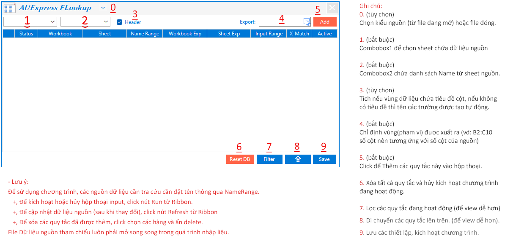
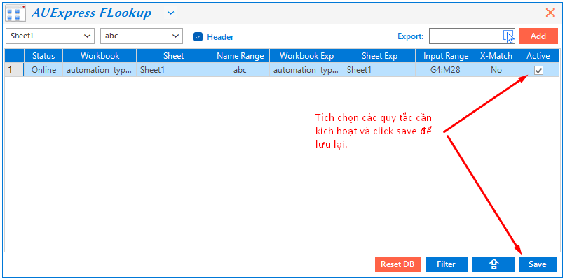
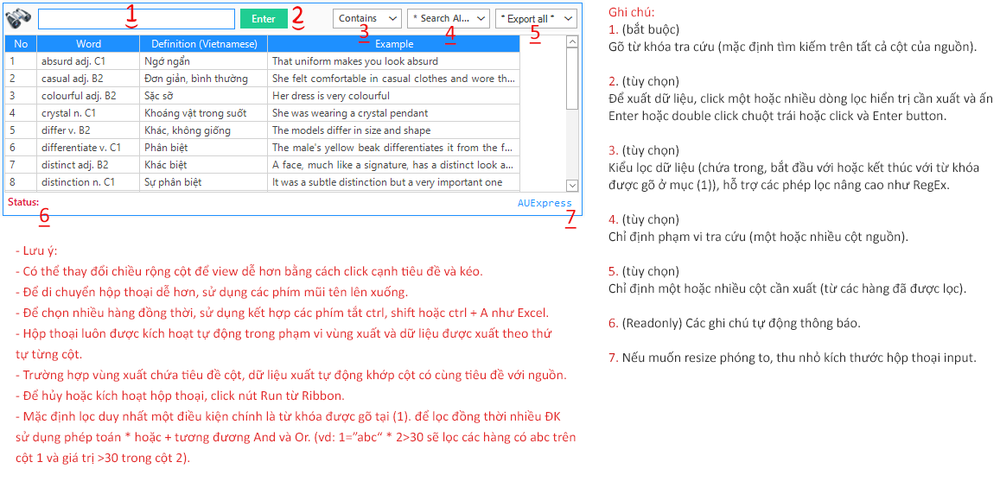

⚊ Sau đây là ảnh mô tả các bước thiết lập hộp thoại FLOOKUP setting.
⚊ Sau đây thêm một hoặc nhiều quy tắc, chọn các quy tắc cần thiết và kích hoạt như ảnh.
⚊ Hộp thoại INPUT sẽ tự động kích hoạt khi nhập liệu trong vùng xuất, dưới đây là các thành phần hộp thoại.
So với các hàm Excel, tính năng này có thể lọc các điều kiện trên một hoặc nhiều cột đồng thời khá đơn giản.
Các thiết lập này chỉ áp dụng trong mỗi phiên Excel (không lưu nguồn).
Để xóa toàn bộ thiết lập và ngưng kích hoạt chọn ResetDB.
Related function
NUMBERTOWORDS (feature) Thiết lập phụ từ cho ứng dụng đọc số thành chữ (Ribbon).
GROUPBY Phân nhóm bảng dữ liệu dựa trên một mảng dữ liệu chỉ định, hỗ trợ tính toán tùy chỉnh.
XGROUP Hàm mở rộng của GROUP. (hỗ trợ các hàm nâng cao).
INCREASE.ADJ Đánh số thứ tự tăng dần theo từng phân nhóm hoặc phần tử trong phân nhóm đó.
Return to Home